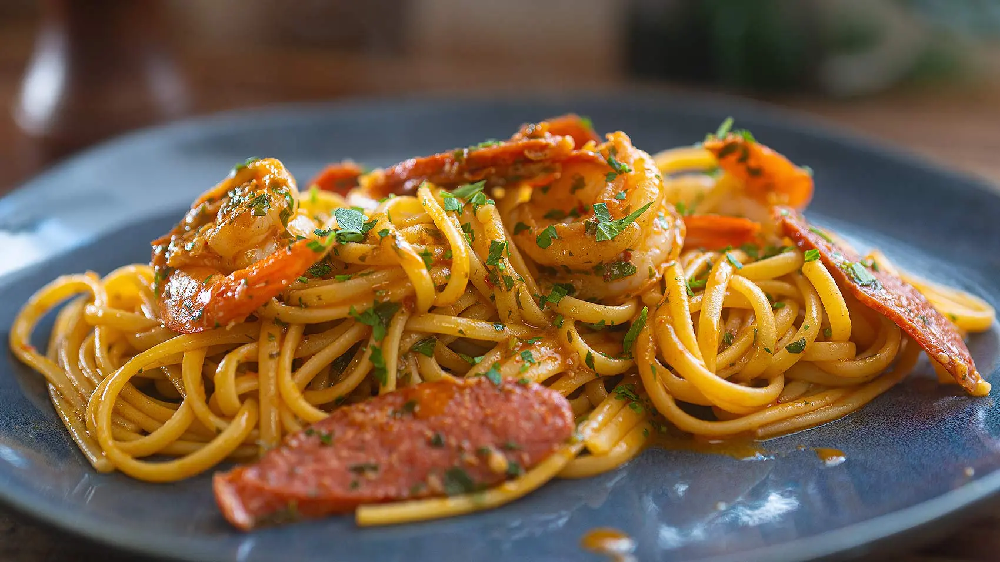

Garlic and Chili Shrimp Pasta
With Chorizo and a Buttery Garlic Sauce

Description
The quick preparation time of just 20 minutes makes this meal not only scrumptious but also incredibly convenient for daily enjoyment. The al dente pasta absorbs the rich flavours of the chorizo and seafood sauce, making each bite an explosion of taste. The white wine reduction, infused with smoked paprika and a touch of lemon, elevates the sauce to a level of sophistication.
This recipe is exceptionally delicious due to the harmonious combination of chorizo and seafood, which creates a symphony of flavours. Chorizo, with its smoky, spicy, and slightly tangy profile, complements the delicate sweetness of the shrimp perfectly. The contrast in textures between the tender shrimp and the crispy chorizo adds a delightful dimension to the dish. Furthermore, the addition of sun-dried or semi sun-dried tomatoes, garlic, and chili enhances the overall depth of flavour.
To round off this culinary experience, garnishing with fresh parsley and enjoying it with a crisp, chilled white wine like Sauvignon Blanc or Pinot Gris is a brilliant pairing that complements the dish’s flavours. This recipe showcases how simplicity and careful selection of ingredients can result in a culinary masterpiece that can be savoured every day.
Ingredients
- 9 large shrimps (prawns)
- 2-3 garlic cloves
- 1 chorizo sausage
- 125 g semi-dried tomatoes
- 250 g linguine pasta
- 1 tsp chili flakes (less if really hot)
- 50 ml olive oil
- 100 ml dry white wine
- 1 1/2 tsp smoked paprika
- 50 g soft butter
- Parsley (large handful)
- 1/2 lemon squeeze
- Salt
Steps
- To cook your pasta, place a large pot of water on medium heat and bring to a gentle boil. Season with salt and cook your pasta al dente.
- Devein the shrimps and rinse well.
- Slice the chorizo into very thin slices. (Half frozen works best)
- Peel the garlic and chop finely.
- Finely chop the parsley, set aside.
- In a medium size pan over medium high heat, add olive oil. Once the olive oil is shimmering and hot, add the shrimps and chorizo. Cook about 45 seconds on each side until shrimp browned but still translucent inside. Don’t over cook the shrimp. Set aside in warm place.
- To the same pan back on medium heat, add a drizzle of olive oil, the garlic and chili. Sweat the garlic until soft, do not brown, add the smoked paprika, mix well then, deglaze with the white wine. Reduce by half. Add the squeeze of half a lemon.
- Return the shrimp and chorizo to the sauce along with sun dried tomatoes and the chopped parsley . Add some pasta cooking water, a drizzle of olive oil and season with a little salt. Mix and toss well over high heat for approx. 20 seconds. Add the al dente pasta, mix well and serve immediately on warm plates. Drizzle a little more olive oil on top and garnish with parsley leaves.